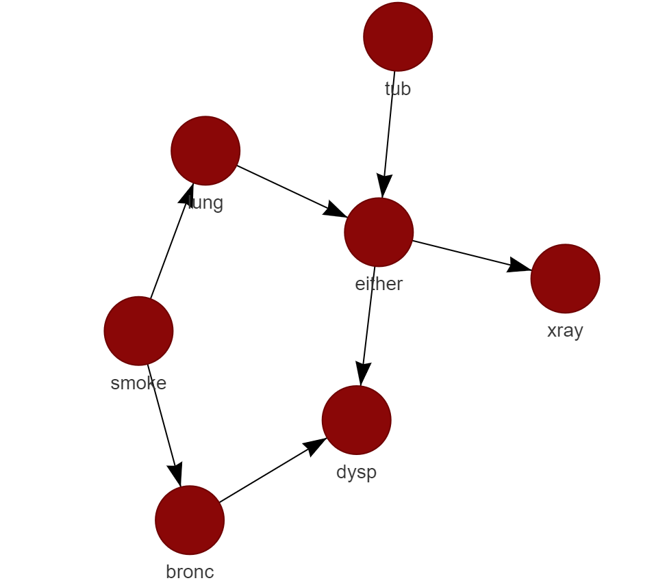
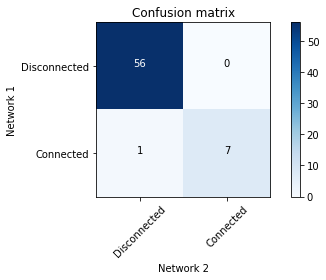

Plotting
bnlearn provides both interactive and static plotting capabilities through the bnlearn.bnlearn.plot() function. These visualization tools allow for extensive customization of network and figure properties, including node colors, sizes, and layout configurations. Interactive plots are created using the D3Blocks library, while static plots utilize matplotlib and networkx.
Interactive Plotting
Prerequisites
Before creating interactive plots, you need to install the d3blocks library:
pip install d3blocks
Basic Usage
The simplest way to create an interactive plot is by setting interactive=True in the plot function:
import bnlearn as bn
# Load example dataset
df = bn.import_example(data='asia')
# Learn the network structure
model = bn.structure_learning.fit(df)
# Create interactive plot with default settings
bn.plot(model, interactive=True)
# Customize the interactive plot with specific parameters
bn.plot(model,
interactive=True,
params_interactive={
'height': '800px',
'width': '70%',
'layout': None,
'bgcolor': '#0f0f0f0f'
})
Customizing Node Properties
You can customize the appearance of nodes in several ways:
Uniform Node Properties: Apply the same color and size to all nodes in the network:
# Set uniform node color
bn.plot(model, interactive=True, node_color='#8A0707')
# Set uniform node color and size
bn.plot(model, interactive=True, node_color='#8A0707', node_size=25)
|
 |

Individual Node Properties: Customize specific nodes with different colors and sizes:
# Retrieve current node properties
node_properties = bn.get_node_properties(model)
# Customize specific nodes
node_properties['xray']['node_color'] = '#8A0707'
node_properties['xray']['node_size'] = 50
node_properties['smoke']['node_color'] = '#000000'
node_properties['smoke']['node_size'] = 35
# Create plot with customized node properties
bn.plot(model, node_properties=node_properties, interactive=True)
Static Plotting
Networkx Static Plots
Networkx provides a flexible way to create static network visualizations:
# Create basic static plot
bn.plot(model, interactive=False)
# Customize static plot with specific parameters
bn.plot(model,
interactive=False,
params_static={
'width': 15,
'height': 8,
'font_size': 14,
'font_family': 'times new roman',
'alpha': 0.8,
'node_shape': 'o',
'facecolor': 'white',
'font_color': '#000000'
})
Graphviz Static Plots
Graphviz provides a more structured and hierarchical visualization style:
# Create graphviz plot
bn.plot_graphviz(model)
Network Comparison
The library provides tools to compare different networks, which is particularly useful when comparing learned structures against ground truth or different learning methods:
# Load ground truth network
model = bn.import_DAG('asia')
# Plot ground truth
G = bn.plot(model)
# Generate synthetic data
df = bn.sampling(model, n=10000)
# Learn structure from data
model_sl = bn.structure_learning.fit(df, methodtype='hc', scoretype='bic')
# Compute edge strengths
model_sl = bn.independence_test(model_sl, df, test='chi_square', prune=True)
# Plot learned structure
bn.plot(model_sl, pos=G['pos'])
# Compare networks
bn.compare_networks(model, model_sl, pos=G['pos'])
|
|


|
 |

Advanced Customization
Node Properties
Node properties can be customized using the bnlearn.bnlearn.get_node_properties() function:
import bnlearn as bn
# Load example data
df = bn.import_example(data='asia')
# Learn structure
model = bn.structure_learning.fit(df)
# Get current node properties
node_properties = bn.get_node_properties(model)
# Customize specific nodes
node_properties['xray']['node_color'] = '#8A0707'
node_properties['xray']['node_size'] = 2000
node_properties['smoke']['node_color'] = '#000000'
node_properties['smoke']['node_size'] = 2000
# Create plot with customized nodes
bn.plot(model, node_properties=node_properties, interactive=False)
Edge Properties
Edge properties can be customized using the bnlearn.bnlearn.get_edge_properties() function. These customizations can be combined with node properties for comprehensive network visualization.
import bnlearn as bn
# Load asia DAG
df = bn.import_example(data='asia')
# Structure learning of sampled dataset
model = bn.structure_learning.fit(df)
# Test for significance
model = bn.independence_test(model, df)
# plot static
G = bn.plot(model)
# Set some edge properties
# Because the independence_test is used, the -log10(pvalues) from model['independence_test']['p_value'] are scaled between minscale=1 and maxscale=10
edge_properties = bn.get_edge_properties(model)
# Make some changes
edge_properties['either', 'xray']['color']='#8A0707'
edge_properties['either', 'xray']['weight']=4
edge_properties['bronc', 'smoke']['weight']=15
edge_properties['bronc', 'smoke']['color']='#8A0707'
# Plot
params_static={'edge_alpha':0.6, 'arrowstyle':'->', 'arrowsize':60}
bn.plot(model, interactive=False, edge_properties=edge_properties, params_static=params_static)
|